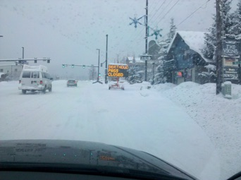

2010-2011 Season

For the recap of 2010/2011, I’m going to try out using the mac publishing tools, rather than crank the HTML (mostly) by hand. So far, so good...I’m using iWeb on a powerbook, and using the blog functionality to capture the days.
Max graduated from Piranhas to the Park Sharks in the competition center. This is the feeder program for the winter park Alpine and Freestyle teams. He went every saturday from the beginning of december through mid-march. There were some days where he loved it, and some days where he was *really* tired afterwards...and a lot of days where he had trouble getting up and motivating. Dave Kaplan was his coach, and did a really good job...in fact, Max skis bumps *much* better than me now (although that’s not *too* hard...). He’s also edging fairly well, as you’ll see in some of the vids in the “Recaps” blog. At the end of the season, he wasn’t sure he wanted to do “sharks” again (as it’s a lot of work), but, as I type this at the end of May, he says he really wants to do this next season. We’ll see...
This was a “la nina” season...*much* better snow than last year. We had *many* days of 6-12 inch dumps, but no “epic” days (where the snow is measured in feet rather than inches). We did have a couple days where we got stuck on the right side of the pass....gotta love that!!!
